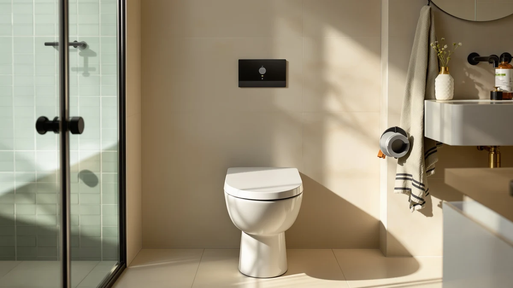

Brondell Swash SE400 Electric Review (2026): Worth It?
Prices and picks verified as of October 2026. Independent, reader-supported reviews.


Quick Answer
For most people comparing electric bidet seats, the Brondell Swash SE400 is worth its $279.99 price mainly for its review history: 1,424 verified reviews averaging 4.2 out of 5, the largest track record in this comparison. This brondell swash se400 electric review compares it against three cheaper alternatives from iliD, WLJBIDET, and SmartWhale that undercut it on price, so the right pick depends on whether that review history is worth the premium for your bathroom.
Our pick: Brondell Swash SE400 Electric Bidet, $279.99 Check Price on Amazon
Bottom line: our top pick is the Brondell Swash SE400 Electric Bidet Toilet Seat at $279.99.
Things to Know Before You Buy
- The Brondell Swash SE400 is built for elongated toilet bowls, the shape most common in newer US bathrooms, so confirm your bowl shape before ordering.
- At $279.99, it costs more than all three alternatives compared in this brondell swash se400 electric review, including $84.30 more than the SmartWhale.
- Its 4.2 out of 5 rating across 1,424 reviews is the largest public review base in this comparison; the iliD and WLJBIDET listings carry no published rating yet.
- It replaces your existing elongated toilet seat and mounts with a standard bolt pattern, the same way the alternatives compared here do.
- As an electric bidet seat, it needs a grounded outlet near the toilet; check our electrical requirements guide before you commit to the higher price.
This brondell swash se400 electric review breaks down what the $279.99 Brondell Swash SE400 Electric Bidet gets you, and how it stacks up against three lower-priced electric bidet seats from iliD, WLJBIDET, and SmartWhale built for the same elongated bowl shape. The SE400 carries a 4.2 out of 5 rating across 1,424 verified reviews, the only seat in this comparison with a review history at that scale. Its body combines plastic and wood construction sized for elongated bowls, the shape common in most newer US bathrooms. If you want an established electric bidet model backed by a large owner review base rather than a newer, less-reviewed alternative, that history is what determines whether $279.99 makes sense for your bathroom.
We compared the SE400 against three cheaper elongated electric bidet seats for this brondell swash se400 electric review: the iliD Smart Max Bidet Toilet at $249.99, the WLJBIDET Bidet Toilet Seat at $199.99, and the SmartWhale Electric Bidet Toilet Seat at $195.69. All three undercut the SE400 on price, and the SmartWhale has its own review history at 4.4 out of 5 across 526 reviews. The comparison comes down to whether Brondell's longer track record and larger review base justify paying more than a newer alternative, and pricing, materials, and what verified owners report point toward different answers depending on your budget and how much weight you put on review history.
Why You Should Trust Us
Ilane Tall covers bathroom fixtures and toilet seat upgrades for Best Toilet Seats, including electric bidet models from Brondell, iliD, and SmartWhale. For this brondell swash se400 electric review, she compared manufacturer specifications, current Amazon pricing, and patterns across verified owner reviews rather than relying on claims from a single retailer listing.
We do not run a physical testing lab. Our picks come from comparing publicly available specs, pricing history, and what verified buyers report after they install these seats in their own bathrooms. That research-first approach lets us compare far more models across price points than any household could physically own at once, and we update pricing and picks as new information becomes available.
This site earns a commission when you buy through the links here, but that doesn't change which seat we point you toward. The Brondell Swash SE400 costs more than every alternative in this brondell swash se400 electric review, and if a cheaper iliD or WLJBIDET seat actually fits your needs better, saying so serves you more than pushing the highest-priced option.
Our Research Experience
For this brondell swash se400 electric review, we compared the manufacturer's listed materials and dimensions for the SE400 and the three alternatives, then cross-referenced installation and daily-use patterns that repeat across verified owner reviews on Amazon. We did not install or run any of these seats ourselves.
We get a broader view of value by comparing specifications, current pricing, and repeated owner feedback across four separate electric bidet listings than one household could reach by living with a single unit. Where owner reviews disagreed with manufacturer claims, we noted the disagreement rather than picking a side.
We also checked how the SE400's price and review history stack up against Brondell's broader lineup, beyond the three competing brands in this comparison, since some buyers land on this page after comparing multiple Brondell models directly.
Overview & Specs

Brondell Swash SE400 Electric Bidet
What we like
- The largest public review base in this comparison, 4.2 out of 5 across 1,424 verified reviews
- Elongated, plastic-and-wood build matches the bowl shape used in most newer US bathrooms
- An established Brondell electric bidet lineup with a longer track record than the newer alternatives here
Flaws but not dealbreakers
- Costs more than all three alternatives in this brondell swash se400 electric review, including $84.30 more than the SmartWhale
- Needs a grounded outlet near the toilet, like every electric bidet seat in this comparison
- Fits elongated bowls only, so round-bowl toilets need a different model
| Material | Plastic / wood |
| Size | Elongated |
The Brondell Swash SE400 Electric Bidet sits at $279.99, the highest price in this brondell swash se400 electric review comparison. Its housing combines molded plastic with a wood-composite base plate, the same material pairing used across every seat compared here. The seat is built specifically for elongated toilet bowls, the shape common in most newer US bathrooms. That price buys Brondell's established electric bidet platform, backed by 1,424 verified reviews averaging 4.2 out of 5, a review history none of the three cheaper alternatives can match yet.
Installation follows the same two-bolt mounting pattern as a standard elongated toilet seat, so confirming your bowl shape before ordering matters as much here as it does with the iliD, WLJBIDET, and SmartWhale alternatives. Because the SE400 draws power to run its wash functions, it needs a grounded outlet within reach of the toilet, a requirement it shares with every seat in this comparison. If long-term reliability data matters more to you than saving $30 to $84, the SE400's review count is the strongest reason to pay its higher price over the three competitors covered in this brondell swash se400 electric review.
What We Liked
The clearest strength of the Brondell Swash SE400 is its review history. At 1,424 verified reviews averaging 4.2 out of 5, it has the largest public track record in this brondell swash se400 electric review, while the iliD Smart Max and WLJBIDET listings carry no published rating yet. Reviewers consistently note that the wash function and seat fit work as described once installed correctly.
Its elongated, plastic-and-wood build also holds up well against the SmartWhale, the only other seat in this comparison with a comparable review base at 4.4 out of 5 across 526 reviews. Owners who already have an elongated bowl report a straightforward installation using the same two-bolt pattern as their previous seat, which keeps the upgrade process familiar even though the SE400 costs more than any alternative here.
The SE400 also benefits from Brondell's broader track record in the electric bidet category. Reviewers who've owned other Brondell Swash models describe consistent build quality across the lineup, a detail that matters when you're paying the highest price in this comparison for a seat you'll use every day.
What Could Be Better
Price is the most obvious drawback. At $279.99, the SE400 costs $30 more than the iliD Smart Max, $80 more than the WLJBIDET, and $84.30 more than the SmartWhale, and all three alternatives offer the same core wash and seat functions for less.
The electrical requirement is a real constraint too. Owners report needing a grounded outlet near the toilet before installation, and older bathrooms often don't have one wired in, which adds an electrician's visit on top of the purchase price. Because the SE400 fits elongated bowls only, anyone with a round toilet needs a different model entirely, a detail worth confirming before you commit to this brondell swash se400 electric review's top pick.
The iliD Smart Max and WLJBIDET listings don't include a published rating or review count at the time of this review, which makes a head-to-head comparison on long-term reliability harder than comparing price alone.
Who Is It For?
The Brondell Swash SE400 makes sense if you want an electric bidet seat backed by a large, established review history, and you're weighing it against newer, less-reviewed alternatives rather than deciding whether to go electric at all. At $279.99, it's the priciest option in this comparison, so the decision comes down to whether that review history is worth the premium for your bathroom.
Skip it if price is your main constraint. The SmartWhale Electric Bidet Toilet Seat covers the same elongated bowl shape for $84.30 less and carries its own solid review base at 4.4 out of 5. And if you're open to a newer brand without an established review history, the iliD Smart Max or WLJBIDET options are worth a look before you commit to the SE400's higher price.
If you're upgrading a rental or a bathroom you don't plan to keep long-term, the $279.99 price is harder to justify no matter which feature set you need, and the WLJBIDET at $199.99 is the more practical choice.
Alternatives to Consider
The SE400 isn't the only elongated electric bidet seat worth considering. Here are three alternatives we compared alongside it for this brondell swash se400 electric review, each suited to a different budget and review history.

Editor's Pick
iliD Smart Max Bidet Toilet
At $249.99, the iliD Smart Max undercuts the SE400 by $30 and adds auto open and close lid function, though it doesn't yet have a published rating to compare against Brondell's review history.
$249.99
Check Price on Amazon
Best Value
WLJBIDET Bidet Toilet Seat with
The WLJBIDET Bidet Toilet Seat costs $199.99, the second-lowest price in this comparison, and adds a display screen and remote control, though like the iliD it has no published review history yet.
$199.99
Check Price on Amazon
Premium Choice
SmartWhale Electric Bidet Toilet Seat
The SmartWhale Electric Bidet Toilet Seat is the lowest-priced option here at $195.69 and carries its own solid review base at 4.4 out of 5 across 526 reviews, the closest rival to the SE400's track record for far less money.
$195.69
Check Price on AmazonFrequently Asked Questions
Is the Brondell Swash SE400 worth $279.99?
Based on our brondell swash se400 electric review, it's worth the price if you specifically want an established electric bidet brand with a large verified review history, since none of the three cheaper alternatives compared here match its 1,424 reviews yet. If price is the deciding factor, the SmartWhale option in this comparison costs significantly less.
How does the Brondell Swash SE400 compare to the SmartWhale Electric Bidet Toilet Seat?
The SmartWhale costs $195.69, $84.30 less than the SE400's $279.99, and carries its own review base at 4.4 out of 5 across 526 reviews. Choose the SmartWhale for a lower price with a comparable review history, and choose the SE400 if Brondell's longer track record and larger review count matter more to you.
Does the Brondell Swash SE400 need a dedicated electrical outlet?
Yes. The SE400 is an electric bidet seat, so it needs a grounded outlet near the toilet to run its wash functions. If your bathroom doesn't already have one, budget for an electrician visit on top of the $279.99 price before choosing this brondell swash se400 electric review's top pick.
Final Verdict
Our brondell swash se400 electric review comes down to a simple tradeoff: the Brondell Swash SE400 has the largest verified review history in this comparison, and that history is what justifies its $279.99 price over three cheaper alternatives from iliD, WLJBIDET, and SmartWhale. If an established Brondell track record matters more to you than saving money, the Swash SE400 is worth the investment. If price is your main constraint, the SmartWhale's $195.69 price tag and its own solid review base make it the more practical pick.